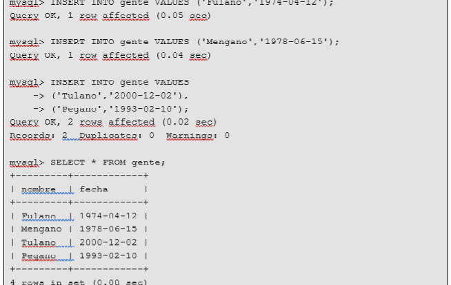

13 trucos y consejos de PHP que pueden hacerte la vida (profesional) más fácil
PHP tiene bastante mala prensa. En las conferencias no hay ponente que quiera ser cool que no lance su pullita hacia PHP y los phperos. …
LEER MAS
es un lenguaje de código abierto muy popular especialmente adecuado para el desarrollo web y que puede ser incrustado en HTML..

Se llama base de datos, o también banco de datos, a un conjunto de información perteneciente a un mismo contexto, ordenada de modo sistemático para su posterior recuperación, análisis y/o transmisión. Existen actualmente muchas formas de bases de datos, que van desde una biblioteca hasta los vastos conjuntos de datos de usuarios de una empresa de telecomunicaciones Fuente: https://concepto.de/base-de-datos/#ixzz5qBM6SaE9
Aprender a administrar una base de datos con MySQL. Conocer algunas herramientas que ayudan a administrar una base de datos de MySQL. Aprender a acceder a una base de datos desde PHP. Aprender a realizar una consulta SELECT y mostrar el resultado en una página web.
Es un conjunto de datos pertenecientes a un mismo contexto y almacenados sistemáticamente para su posterior uso. En este sentido, una Biblioteca puede considerarse una base de datos compuesta en su mayoría por documentos y textos impresos en papel e indexados para su consulta.
Proveen facilidades para la manipulación de grandes volúmenes de datos. Entre éstas se encuentran:
• Simplifican la Programación de equipos de consistencia.
• Manejando las Políticas de respaldo adecuadas, garantizan que los cambios de la base serán siempre consistentes sin importar si hay errores correctamente, etc.
• Organizan los datos con un impacto mínimo en el Código de los programas.
• Bajan drásticamente los tiempos de desarrollo y aumentan la calidad del sistema desarrollado si son bien explotados por los desarrolladores.
• Usualmente, proveen interfaces y lenguajes de consulta que simplifican la Recuperación de los datos


PHP es un lenguaje de código abierto muy popular, adecuado para desarrollo web y que puede ser incrustado en HTML. Es popular porque un gran número de páginas y portales web están creadas con PHP. Código abierto significa que es de uso libre y gratuito para todos los programadores que quieran usarlo. Incrustado en HTML significa que en un mismo archivo vamos a poder combinar código PHP con código HTML, siguiendo unas reglas.

PHP tiene bastante mala prensa. En las conferencias no hay ponente que quiera ser cool que no lance su pullita hacia PHP y los phperos. …
LEER MASUna importante noticia relacionada con la programación web, pero que también nos atañe al resto de los mortales, no sólo a los programadores web, es la que a continuación te traemos: PHP versión 7 ha sido liberada. …
LEE MASDefinir variables en PHP nos es util en todo el codigo que hagamos, ya que las variables son la principal herramienta para administrar informacion y datos de nuestra aplicación web a realizar. …
LEER MASLa forma más directa de insertar una fila nueva en una tabla es mediante una sentencia INSERT. En la forma más simple de esta sentencia debemos indicar la tabla a la que queremos añadir filas, y los valores de cada columna. Las columnas de tipo cadena o fechas deben estar entre comillas sencillas o dobles, para las columnas numéricas esto no es imprescindible, aunque también pueden estar entrecomilladas. 
La sentencia DELETE sirve para borrar filas de una tabla.
La sintaxis de SQL DELETE es:
DELETE FROM nombre tabla
WHERE nombre columna = valor
La sentencia UPDATE se utiliza para modificar valores en una tabla.
La sintaxis de SQL UPDATE es:
UPDATE nombre tabla SET columna1 = valor1 WHERE columna3 = valor3
La cláusula SET establece los nuevos valores para las columnas indicadas. La cláusula WHERE sirve para seleccionar las filas que queremos modificar.
la sentencia SELECT, tiene como funcionalidad realizar consultas sobre una o varias tablas de una base de datos para extraer un determinado número de filas. La sintaxis es la siguiente:
A continuación, vamos a complicar un poco la cosa aprendiendo a realizar consultas en varias tablas de la base de datos al mismo tiempo.
Es habitual que queramos acceder a datos que se encuentran en más de una tabla y mostrar información mezclada de todas ellas como resultado de una consulta. Para ello tendremos que hacer combinaciones de columnas de tablas diferentes.
En SQL es posible hacer esto especificando más de una tabla en la cláusula FROM de la instrucción SELECT.
Operaciones de unión - JOIN
La operación JOIN o combinación permite mostrar columnas de varias tablas como si se tratase de una sola tabla, combinando entre sí los registros relacionados usando para ello claves externas
Con el modelo de entidad relación anterior realizaremos la sintaxis de una consulta multitabla.
Select autor,Titulo,nombre_del_lector,Genero,dirección from Libros join préstamo on libros.idLibro=préstamo.idLibro join Lectores on préstamo.idLector=Lectores.idLector;
En el ejemplo anterior mostramos en la consulta los campos autor, título y genero de la tabla libros, nombre del lector y dirección de la tabla lectores, esto fue posible gracias a las conexiones de las tablas por medio de las claves principales y foráneas .